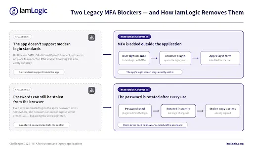
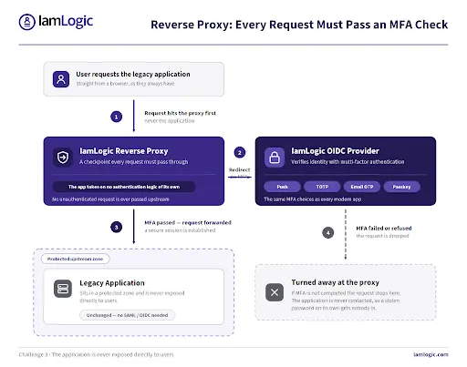
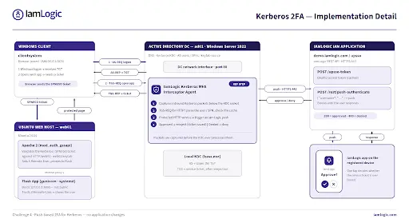

Adding multi-factor authentication (MFA) to a modern cloud app is usually a quick job. Adding it to a custom-built or legacy application is a very different story. These apps often can’t use modern login standards, so the second factor has to be added around them. This post walks through the main challenges teams run into - and how IamLogic solves each one.
Challenge 1: The app doesn’t support modern login standards
Modern MFA relies on standards like SAML, OAuth2 and OpenID Connect (OIDC). Many older and custom apps were built before these existed, so there is simply no place to “connect” an MFA service. The traditional answer - re-writing the application - is expensive, slow and risky.
How IamLogic solves it
IamLogic adds MFA outside the application instead of inside it. For a legacy web app with a basic login page, the IamLogic browser plugin handles the sign-in: the user authenticates to IamLogic once with MFA, and the plugin then autofills the app’s username and password for them. No standard support is needed inside the app, and its login screen stays exactly as it is.
Challenge 2: Passwords can still be stolen from the browser
Even when logins are automated, the app’s password still lives somewhere - and browsers can leak or expose saved passwords. If that password is captured, the extra login step can be bypassed entirely.
How IamLogic solves it
IamLogic automatically rotates (changes) the password immediately after each use. So even if someone manages to grab the password from the browser, it has already expired and can’t be reused. Users don’t need to know or remember the password at all.

Challenge 3: You can’t expose the app directly to users
Some applications can’t take on any authentication logic of their own, and exposing them directly to users is a security risk. You need a way to force every user through an MFA check before they ever reach the app.
How IamLogic solves it
IamLogic places a reverse proxy in front of the application - a checkpoint that every request must pass through. Unauthenticated users are redirected to verify their identity with MFA first; only after that does the proxy forward the request to the app. The application sits in a protected zone and is never reached without a passing MFA check.

Challenge 4: Kerberos apps weren’t built for MFA
A large share of internal Windows and on-premises apps authenticate with Kerberos through Active Directory. Kerberos is fast and convenient, but it has no built-in concept of a second factor - and you can’t change how these apps work without major effort.
How IamLogic solves it
IamLogic adds push-based 2FA to Kerberos with no application changes. A lightweight interceptor agent on the domain controller watches ticket requests. When a user opens a protected app, the agent pauses the request and sends a push approval to the user’s device. Approve, and the ticket is issued and the app opens; deny, and the request is dropped.

Challenge 5: Keeping users productive and auditors happy
Any new security step risks slowing users down or creating help-desk tickets - and at the same time, auditors now expect strong authentication on every system, with proof.
How IamLogic solves it
- Low friction. Users keep their normal login and add a single approval or code - nothing new to install for reverse-proxy and Kerberos flows.
- One consistent MFA experience. The same choices - push, TOTP, email/SMS OTP, WebAuthn passkeys - work across modern and legacy apps.
- Audit-ready by design. Detailed logs and audit trails help meet standards such as ISO 27001, SOX, GDPR and HIPAA.
The takeaway
The hard part of MFA for custom and legacy apps isn’t MFA itself - it’s the fact that these apps can’t adopt it on their own. IamLogic removes that barrier by adding the second factor around the application: a browser plugin for legacy web logins, a reverse proxy for apps that can’t authenticate on their own, and push-based 2FA for Kerberos. Every app gets strong MFA - with no rebuilds and no disruption.
IamLogic Access Manager is a product of UPSSO Pvt Ltd, an ISO/IEC 27001:2022 certified company. It secures access to modern and legacy applications alike - with SSO, MFA and controlled access across every application, not just the new ones.
Learn more: https://iamlogic.com/ • Talk to us: info@iamlogic.com